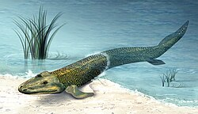

From Fish to Humans
In the distant past, the earliest life forms lived in water. Over millions of years, some fish evolved adaptations that allowed their descendants to survive on land. These land vertebrates eventually diversified into many groups, including mammals and, much later, humans.
Tiktaalik: A Link Between Water and Land

Tiktaalik lived about 375 million years ago. It had fish-like features, such as gills and scales, as well as fin bones resembling the limb bones of land vertebrates. It could support its body in shallow water and may have been able to move briefly onto land.
Tiktaalik could possibly represent one of the important evolutionary stages leading toward the distant ancestors of humans. Its fossils help us understand how vertebrates gradually adapted from life in water to life on land.